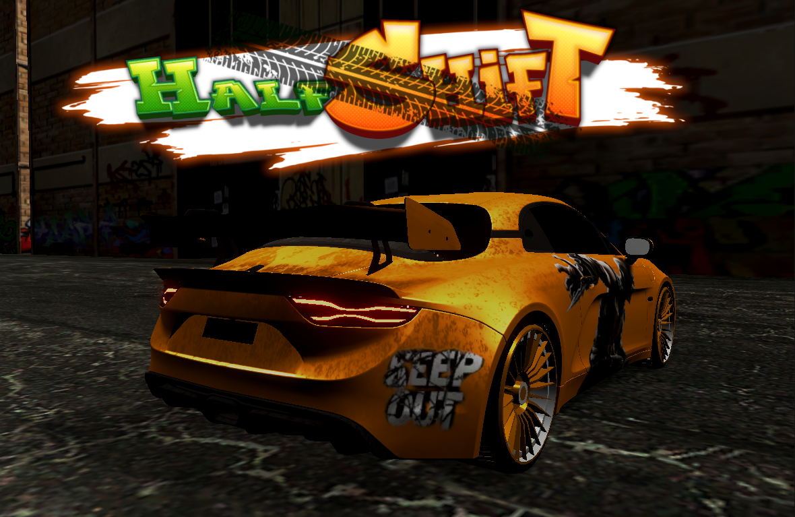

Featured Racer
An arcade racer built for clean lines and late braking.
Half Shift throws you into sleek night circuits where every corner rewards commitment. It is a high-speed racer about threading tight spaces, carrying momentum through the turn, and shaving seconds off a run until the track finally clicks.
Arcade racing flow
Precision cornering
Time attack mastery